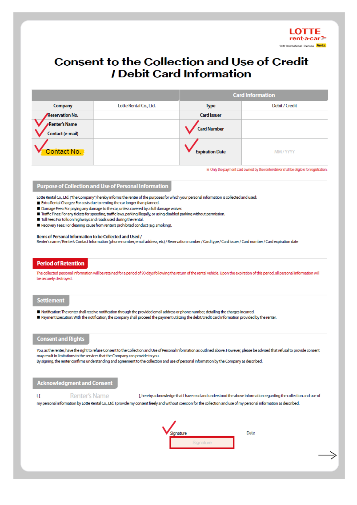
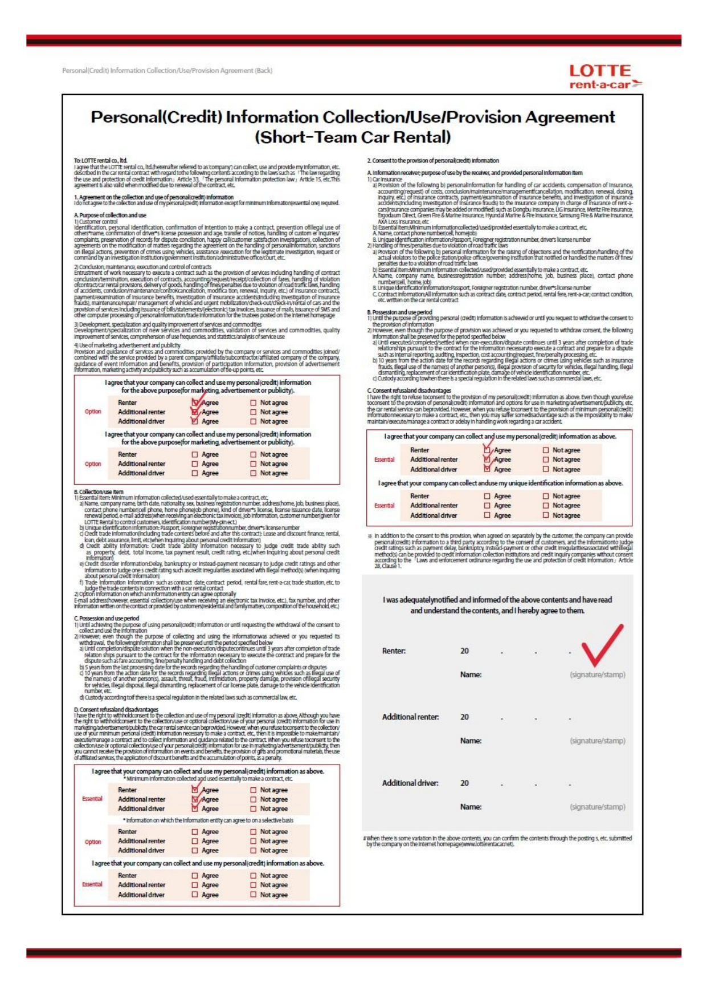

1쪽 · 카드 정보 및 서명

2쪽 · 개인정보 동의 및 서명
원본에 있는 빨간 체크·예시 표시도 원본 그대로 보존됩니다. 이 표시는 이번 고객이 새로 선택한 동의가 아닙니다. 이 화면은 동의 선택을 새로 수집하지 않으며, 빈칸의 이름·날짜·서명만 추가합니다. 추가 운전자가 없으면 해당 빈칸은 비워 두세요.

원본 2쪽 PDF는 변경하지 않고 사본의 빈칸에 입력·날짜·서명만 추가합니다.
입력·서명은 서버로 전송하거나 자동 저장하지 않습니다. 새로고침하면 사라집니다. PDF에는 카드 정보가 포함되므로 안전하게 보관하세요.
iPad: PDF가 열리면 공유 → ‘파일에 저장’을 선택하세요. 다운로드된 PDF는 이 화면에서 삭제되지 않습니다.

원본에 있는 빨간 체크·예시 표시도 원본 그대로 보존됩니다. 이 표시는 이번 고객이 새로 선택한 동의가 아닙니다. 이 화면은 동의 선택을 새로 수집하지 않으며, 빈칸의 이름·날짜·서명만 추가합니다. 추가 운전자가 없으면 해당 빈칸은 비워 두세요.
